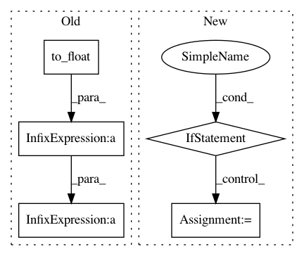

5ec08ed0e16d87c029bc5d9de46b95800d0bc470,texar/losses/mle_losses.py,,smoothing_cross_entropy,#Any#Any#Any#Any#Any#,169
Before Change
// Normalizing constant is the best cross-entropy value with soft targets.
// We subtract it just for readability, makes no difference on learning.
normalizing = -(
confidence * tf.log(confidence) + tf.to_float(vocab_size - 1) *
low_confidence * tf.log(low_confidence + 1e-20))
if gaussian and confidence > 0.0:
labels = tf.cast(labels, tf.float32)
normal_dist = tf.distributions.Normal(loc=labels, scale=confidence)
After Change
on_value=confidence,
off_value=low_confidence,
dtype=logits.dtype)
if hasattr(tf.nn, "softmax_cross_entropy_with_logits_v2"):
cross_entropy_fn = tf.nn.softmax_cross_entropy_with_logits_v2
else:
cross_entropy_fn = tf.nn.softmax_cross_entropy_with_logits
return cross_entropy_fn(
logits=logits, labels=soft_targets)
In pattern: SUPERPATTERN
Frequency: 3
Non-data size: 5
Instances
Project Name: asyml/texar
Commit Name: 5ec08ed0e16d87c029bc5d9de46b95800d0bc470
Time: 2018-05-03
Author: shore@pku.edu.cn
File Name: texar/losses/mle_losses.py
Class Name:
Method Name: smoothing_cross_entropy
Project Name: asyml/texar
Commit Name: cc4a397586c6dc8c2de95773572bf3ab318a8371
Time: 2018-03-23
Author: zhitinghu@gmail.com
File Name: texar/utils/utils.py
Class Name:
Method Name: switch_dropout
Project Name: NifTK/NiftyNet
Commit Name: addcb13fb3dcd2cdbc32ac81611a78ac1c19b02f
Time: 2017-08-23
Author: egibson@cs.ucl.ac.uk
File Name: niftynet/network/dense_vnet.py
Class Name: DenseVNet
Method Name: layer_op